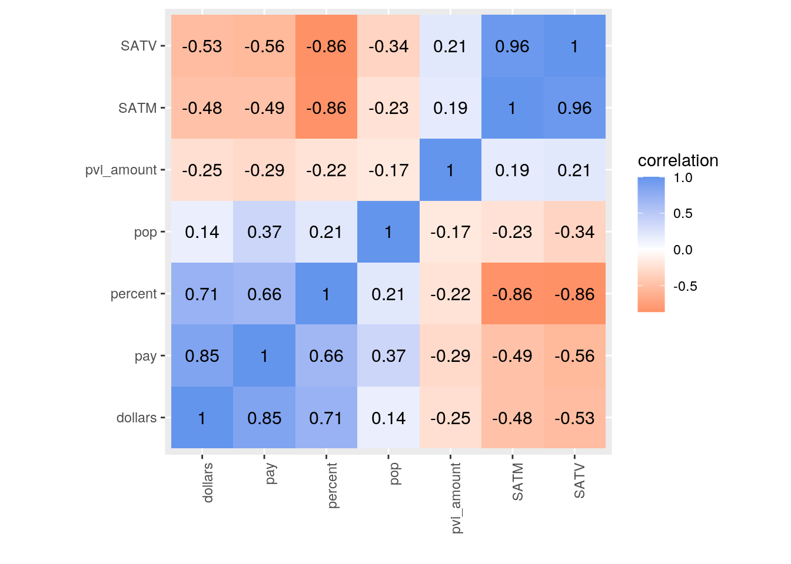
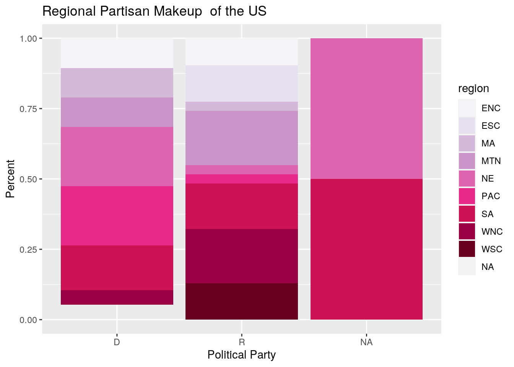
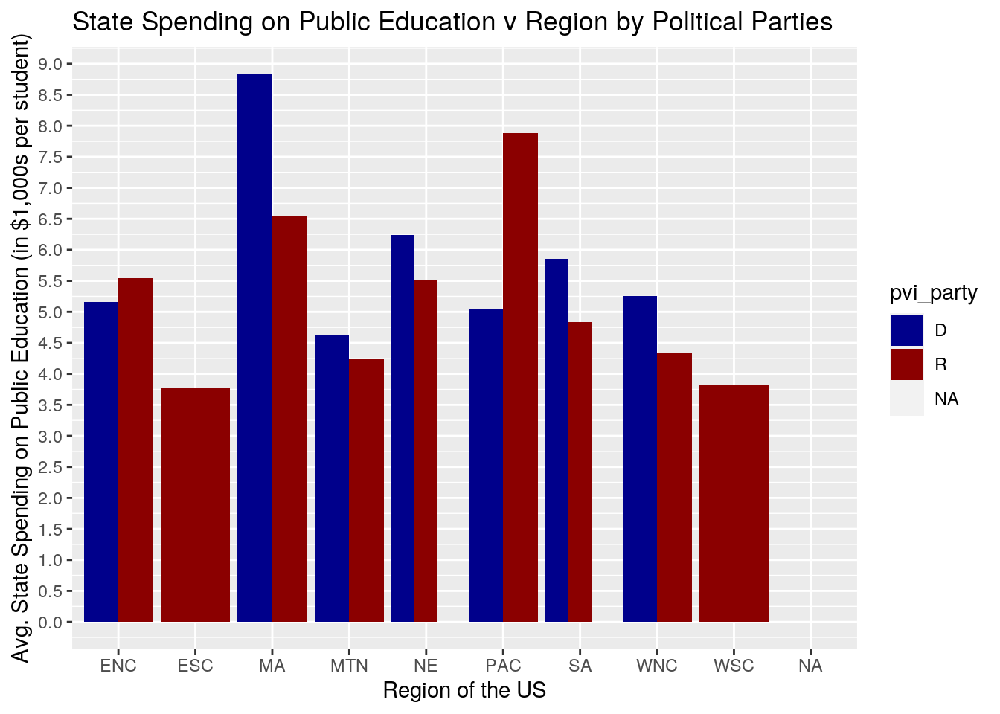
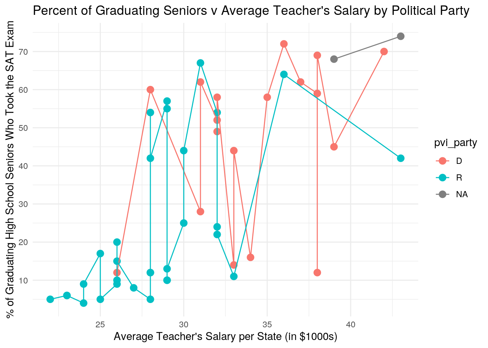
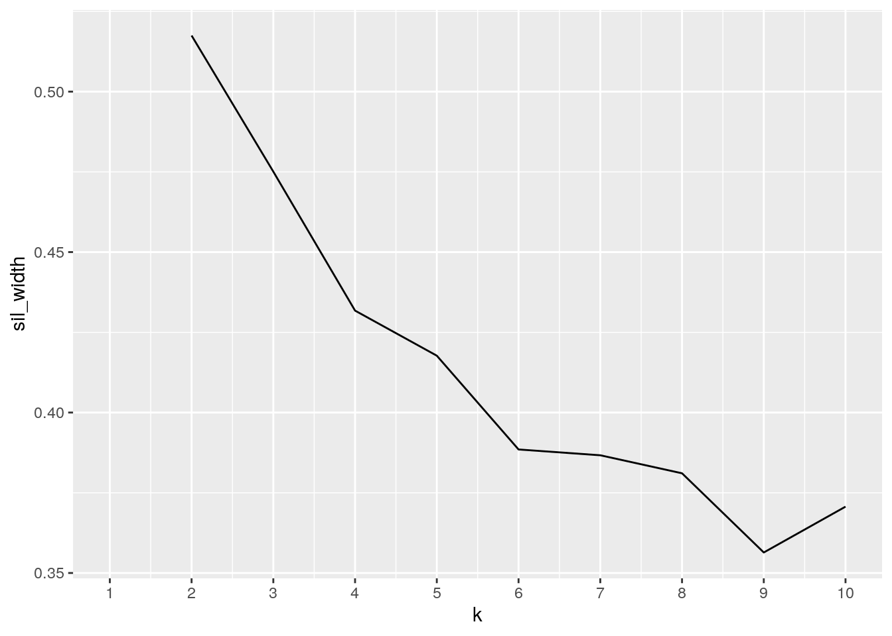
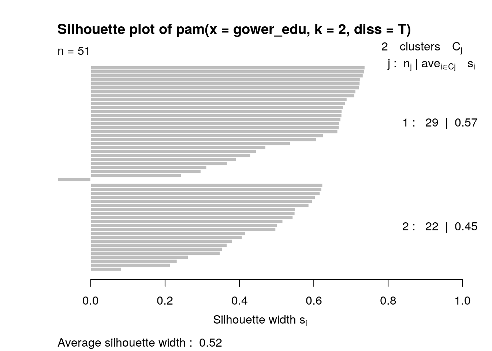
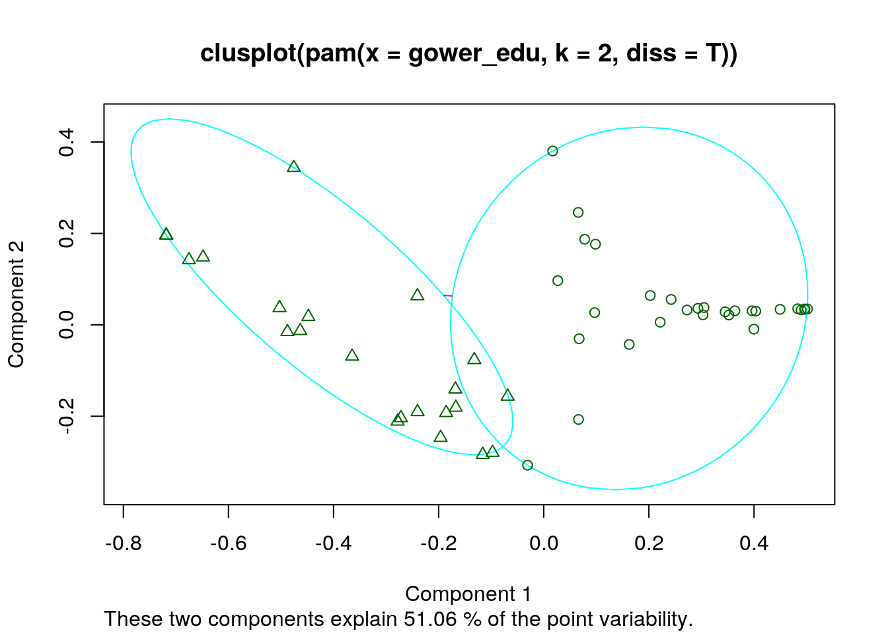

Alexandra Asgarian aa76337
library(tidyverse)
library(ggplot2)
library(GGally)
library(cluster)
partisan_lean_state <- read_csv("partisan_lean_state.csv")
education <- read_csv("education.csv")
stateabbr <- read.csv("stateabbr.csv")My two datasets are from the server. The first, originally called "education", was from the carData package (originally labeled "States") and my second was called "partisan_lean_state" from the fivethirtyeight package. I also used stateabbr from the server to help combine the two packages on the basis of state. The variables in "education" are state, region (U.S. Census region), pop (population in 1,000s), SATV (average score of graduating high-school students in the state on the verbal component of the SAT), SATM (average score of graduating high-school students in the state on the math component of the SAT), percent (percent of graduating high school students in the state who took the SAT exam), dollars (state spending on public education, in $1,000s per student), and pay (average teacher's salary in the state, in $1000s). The second dataset, "partisan_lean_state", includes the state, pvi_party (the party of the vote), and the pvi_amount (the Cook Partisan Voting Index of the vote). These datasets were interesting to me because I've always been a strong supporter of education, properly funding public education, and providing teachers with a salary equivalent to their Herculean efforts, thus I wanted to look further in the States dataset. However, I needed to compare this to more data and I'm also very invested in politics, so the "partisan_lean_state" provided some interesting comparisons with partisan leanings. Ultimately, I do not expect strong associations between either party and funding education and quality of education in state, but given my own partisan leanings, I hope there is a strong correlation with my own party.
partisan <- partisan_lean_state
education1 <- full_join(stateabbr, education, by = c(Code = "State"))
edu <- full_join(partisan, education1, by = c(state = "State"))
edu2 <- edu %>% pivot_wider(names_from = "pvi_party", values_from = "dollars")
head(edu2)## # A tibble: 6 x 13
## state pvi_amount Abbrev Code region pop SATV SATM percent pay R
## <chr> <dbl> <fct> <chr> <chr> <dbl> <dbl> <dbl> <dbl> <dbl> <dbl>
## 1 Alab… 27 Ala. AL ESC 4041 470 514 8 27 3.65
## 2 Alas… 15 Alaska AK PAC 550 438 476 42 43 7.89
## 3 Ariz… 9 Ariz. AZ MTN 3665 445 497 25 30 4.23
## 4 Arka… 24 Ark. AR WSC 2351 470 511 6 23 3.33
## 5 Cali… 24 Calif. CA PAC 29760 419 484 45 39 NA
## 6 Colo… 1 Colo. CO MTN 3294 456 513 28 31 NA
## # … with 2 more variables: D <dbl>, `NA` <dbl>edu4 <- edu %>% pivot_longer(c("SATV", "SATM"), names_to = "name",
values_to = "SAT") %>% select(-name)
head(edu4)## # A tibble: 6 x 11
## state pvi_party pvi_amount Abbrev Code region pop percent dollars pay
## <chr> <chr> <dbl> <fct> <chr> <chr> <dbl> <dbl> <dbl> <dbl>
## 1 Alab… R 27 Ala. AL ESC 4041 8 3.65 27
## 2 Alab… R 27 Ala. AL ESC 4041 8 3.65 27
## 3 Alas… R 15 Alaska AK PAC 550 42 7.89 43
## 4 Alas… R 15 Alaska AK PAC 550 42 7.89 43
## 5 Ariz… R 9 Ariz. AZ MTN 3665 25 4.23 30
## 6 Ariz… R 9 Ariz. AZ MTN 3665 25 4.23 30
## # … with 1 more variable: SAT <dbl>Since my data was already tidy, I illustrated how pivot_longer and pivot_wider may be used above. For my data neither makes sense if I want a neat table, but here I used pivot_wider to separate state spending in $1,000s per student by political party of the state. Therefore, you can see how much Republican (R), Democrat (D), and NA states invest in public education. For pivot_longer, I took both SAT columns and put them under one column, no longer distinguishing between the verbal and math components. However, this does duplicate the number of rows.
partisan <- partisan_lean_state
education1 <- full_join(stateabbr, education, by = c(Code = "State"))
edu <- full_join(partisan, education1, by = c(state = "State"))I completed full joins and have combined partisan_lean_state and education with the help of stateabbr. I had to use stateabbr because education had abbreviated state names while partisan_lean_state had full state names. I chose a full join because my data matched up well and I wanted to keep all the data from each. The joins resulted in a 52 observation dataset with 12 variables. The education dataset had 51 observations with 8 variables, stateabbr had 51 observations with 3 variables, and partisan_lean_state/partisan had 50 observations with 3 variables.
edu %>% na.omit %>% select_if(is.numeric) %>% summarize(mean(pay))## # A tibble: 1 x 1
## `mean(pay)`
## <dbl>
## 1 30.5edu %>% na.omit %>% select_if(is.numeric) %>% summarize(mean(dollars))## # A tibble: 1 x 1
## `mean(dollars)`
## <dbl>
## 1 5.06edu %>% na.omit %>% select_if(is.numeric) %>% summarize(mean(percent))## # A tibble: 1 x 1
## `mean(percent)`
## <dbl>
## 1 32.2edu %>% na.omit %>% select_if(is.numeric) %>% summarize(mean(SATM))## # A tibble: 1 x 1
## `mean(SATM)`
## <dbl>
## 1 499.edu %>% na.omit %>% select_if(is.numeric) %>% summarize(mean(SATV))## # A tibble: 1 x 1
## `mean(SATV)`
## <dbl>
## 1 449.edu %>% na.omit %>% select_if(is.numeric) %>% summarize(mean(pop))## # A tibble: 1 x 1
## `mean(pop)`
## <dbl>
## 1 4996.edu %>% na.omit %>% select_if(is.numeric) %>% summarize(mean(pvi_amount))## # A tibble: 1 x 1
## `mean(pvi_amount)`
## <dbl>
## 1 17.1edu %>% na.omit %>% select_if(is.numeric) %>% summarize(sd(pay))## # A tibble: 1 x 1
## `sd(pay)`
## <dbl>
## 1 4.98edu %>% na.omit %>% select_if(is.numeric) %>% summarize(sd(dollars))## # A tibble: 1 x 1
## `sd(dollars)`
## <dbl>
## 1 1.27edu %>% na.omit %>% select_if(is.numeric) %>% summarize(sd(percent))## # A tibble: 1 x 1
## `sd(percent)`
## <dbl>
## 1 23.3edu %>% na.omit %>% select_if(is.numeric) %>% summarize(sd(SATM))## # A tibble: 1 x 1
## `sd(SATM)`
## <dbl>
## 1 34.1edu %>% na.omit %>% select_if(is.numeric) %>% summarize(sd(SATV))## # A tibble: 1 x 1
## `sd(SATV)`
## <dbl>
## 1 30.8edu %>% na.omit %>% select_if(is.numeric) %>% summarize(sd(pop))## # A tibble: 1 x 1
## `sd(pop)`
## <dbl>
## 1 5511.edu %>% na.omit %>% select_if(is.numeric) %>% summarize(sd(pvi_amount))## # A tibble: 1 x 1
## `sd(pvi_amount)`
## <dbl>
## 1 11.6edu %>% na.omit %>% select_if(is.numeric) %>% summarize(var(pay))## # A tibble: 1 x 1
## `var(pay)`
## <dbl>
## 1 24.8edu %>% na.omit %>% select_if(is.numeric) %>% summarize(var(dollars))## # A tibble: 1 x 1
## `var(dollars)`
## <dbl>
## 1 1.61edu %>% na.omit %>% select_if(is.numeric) %>% summarize(var(percent))## # A tibble: 1 x 1
## `var(percent)`
## <dbl>
## 1 543.edu %>% na.omit %>% select_if(is.numeric) %>% summarize(var(SATM))## # A tibble: 1 x 1
## `var(SATM)`
## <dbl>
## 1 1161.edu %>% na.omit %>% select_if(is.numeric) %>% summarize(var(SATV))## # A tibble: 1 x 1
## `var(SATV)`
## <dbl>
## 1 949.edu %>% na.omit %>% select_if(is.numeric) %>% summarize(var(pop))## # A tibble: 1 x 1
## `var(pop)`
## <dbl>
## 1 30370600.edu %>% na.omit %>% select_if(is.numeric) %>% summarize(var(pvi_amount))## # A tibble: 1 x 1
## `var(pvi_amount)`
## <dbl>
## 1 135.edu %>% na.omit %>% select_if(is.numeric) %>% count(pay)## # A tibble: 20 x 2
## pay n
## <dbl> <int>
## 1 22 1
## 2 23 2
## 3 24 2
## 4 25 2
## 5 26 5
## 6 27 1
## 7 28 6
## 8 29 5
## 9 30 2
## 10 31 3
## 11 32 6
## 12 33 3
## 13 34 1
## 14 35 1
## 15 36 2
## 16 37 1
## 17 38 3
## 18 39 1
## 19 42 1
## 20 43 1edu %>% na.omit %>% select_if(is.numeric) %>% count(dollars)## # A tibble: 49 x 2
## dollars n
## <dbl> <int>
## 1 2.99 1
## 2 3.2 1
## 3 3.32 1
## 4 3.33 1
## 5 3.65 1
## 6 3.68 1
## 7 3.71 1
## 8 3.73 1
## 9 3.74 1
## 10 4.01 1
## # … with 39 more rowsedu %>% na.omit %>% select_if(is.numeric) %>% count(percent)## # A tibble: 35 x 2
## percent n
## <dbl> <int>
## 1 4 1
## 2 5 3
## 3 6 2
## 4 8 1
## 5 9 2
## 6 10 3
## 7 11 1
## 8 12 4
## 9 13 1
## 10 14 1
## # … with 25 more rowsedu %>% na.omit %>% select_if(is.numeric) %>% count(SATM)## # A tibble: 38 x 2
## SATM n
## <dbl> <int>
## 1 437 1
## 2 440 1
## 3 443 1
## 4 459 1
## 5 461 2
## 6 463 2
## 7 466 2
## 8 470 3
## 9 473 2
## 10 476 1
## # … with 28 more rowsedu %>% na.omit %>% select_if(is.numeric) %>% count(SATV)## # A tibble: 41 x 2
## SATV n
## <dbl> <int>
## 1 397 1
## 2 401 2
## 3 404 1
## 4 408 1
## 5 412 1
## 6 413 1
## 7 418 2
## 8 419 1
## 9 420 1
## 10 422 1
## # … with 31 more rowsedu %>% na.omit %>% select_if(is.numeric) %>% count(pop)## # A tibble: 49 x 2
## pop n
## <dbl> <int>
## 1 454 1
## 2 550 1
## 3 563 1
## 4 639 1
## 5 666 1
## 6 696 1
## 7 799 1
## 8 1003 1
## 9 1007 1
## 10 1108 1
## # … with 39 more rowsedu %>% na.omit %>% select_if(is.numeric) %>% count(pvi_amount)## # A tibble: 28 x 2
## pvi_amount n
## <dbl> <int>
## 1 0 1
## 2 1 5
## 3 2 2
## 4 5 3
## 5 6 1
## 6 7 2
## 7 9 2
## 8 12 2
## 9 13 2
## 10 14 1
## # … with 18 more rowsedu %>% na.omit %>% select_if(is.numeric) %>% summarize(quantile(pay))## # A tibble: 5 x 1
## `quantile(pay)`
## <dbl>
## 1 22
## 2 27
## 3 30
## 4 33
## 5 43edu %>% na.omit %>% select_if(is.numeric) %>% summarize(quantile(dollars))## # A tibble: 5 x 1
## `quantile(dollars)`
## <dbl>
## 1 2.99
## 2 4.33
## 3 5.01
## 4 5.50
## 5 9.16edu %>% na.omit %>% select_if(is.numeric) %>% summarize(quantile(percent))## # A tibble: 5 x 1
## `quantile(percent)`
## <dbl>
## 1 4
## 2 11
## 3 24
## 4 55
## 5 72edu %>% na.omit %>% select_if(is.numeric) %>% summarize(quantile(SATM))## # A tibble: 5 x 1
## `quantile(SATM)`
## <dbl>
## 1 437
## 2 470
## 3 497
## 4 523
## 5 577edu %>% na.omit %>% select_if(is.numeric) %>% summarize(quantile(SATV))## # A tibble: 5 x 1
## `quantile(SATV)`
## <dbl>
## 1 397
## 2 423
## 3 445
## 4 476
## 5 511edu %>% na.omit %>% select_if(is.numeric) %>% summarize(quantile(pop))## # A tibble: 5 x 1
## `quantile(pop)`
## <dbl>
## 1 454
## 2 1228
## 3 3487
## 4 6016
## 5 29760edu %>% na.omit %>% select_if(is.numeric) %>% summarize(quantile(pvi_amount))## # A tibble: 5 x 1
## `quantile(pvi_amount)`
## <dbl>
## 1 0
## 2 7
## 3 17
## 4 24
## 5 47edu %>% na.omit %>% select_if(is.numeric) %>% summarize(min(pay))## # A tibble: 1 x 1
## `min(pay)`
## <dbl>
## 1 22edu %>% na.omit %>% select_if(is.numeric) %>% summarize(min(dollars))## # A tibble: 1 x 1
## `min(dollars)`
## <dbl>
## 1 2.99edu %>% na.omit %>% select_if(is.numeric) %>% summarize(min(percent))## # A tibble: 1 x 1
## `min(percent)`
## <dbl>
## 1 4edu %>% na.omit %>% select_if(is.numeric) %>% summarize(min(SATM))## # A tibble: 1 x 1
## `min(SATM)`
## <dbl>
## 1 437edu %>% na.omit %>% select_if(is.numeric) %>% summarize(min(SATV))## # A tibble: 1 x 1
## `min(SATV)`
## <dbl>
## 1 397edu %>% na.omit %>% select_if(is.numeric) %>% summarize(min(pop))## # A tibble: 1 x 1
## `min(pop)`
## <dbl>
## 1 454edu %>% na.omit %>% select_if(is.numeric) %>% summarize(min(pvi_amount))## # A tibble: 1 x 1
## `min(pvi_amount)`
## <dbl>
## 1 0edu %>% na.omit %>% select_if(is.numeric) %>% summarize(max(pay))## # A tibble: 1 x 1
## `max(pay)`
## <dbl>
## 1 43edu %>% na.omit %>% select_if(is.numeric) %>% summarize(max(dollars))## # A tibble: 1 x 1
## `max(dollars)`
## <dbl>
## 1 9.16edu %>% na.omit %>% select_if(is.numeric) %>% summarize(max(percent))## # A tibble: 1 x 1
## `max(percent)`
## <dbl>
## 1 72edu %>% na.omit %>% select_if(is.numeric) %>% summarize(max(SATM))## # A tibble: 1 x 1
## `max(SATM)`
## <dbl>
## 1 577edu %>% na.omit %>% select_if(is.numeric) %>% summarize(max(SATV))## # A tibble: 1 x 1
## `max(SATV)`
## <dbl>
## 1 511edu %>% na.omit %>% select_if(is.numeric) %>% summarize(max(pop))## # A tibble: 1 x 1
## `max(pop)`
## <dbl>
## 1 29760edu %>% na.omit %>% select_if(is.numeric) %>% summarize(max(pvi_amount))## # A tibble: 1 x 1
## `max(pvi_amount)`
## <dbl>
## 1 47edu %>% na.omit %>% select_if(is.numeric) %>% summarize(n_distinct(pay))## # A tibble: 1 x 1
## `n_distinct(pay)`
## <int>
## 1 20edu %>% na.omit %>% select_if(is.numeric) %>% summarize(n_distinct(dollars))## # A tibble: 1 x 1
## `n_distinct(dollars)`
## <int>
## 1 49edu %>% na.omit %>% select_if(is.numeric) %>% summarize(n_distinct(percent))## # A tibble: 1 x 1
## `n_distinct(percent)`
## <int>
## 1 35edu %>% na.omit %>% select_if(is.numeric) %>% summarize(n_distinct(SATM))## # A tibble: 1 x 1
## `n_distinct(SATM)`
## <int>
## 1 38edu %>% na.omit %>% select_if(is.numeric) %>% summarize(n_distinct(SATV))## # A tibble: 1 x 1
## `n_distinct(SATV)`
## <int>
## 1 41edu %>% na.omit %>% select_if(is.numeric) %>% summarize(n_distinct(pop))## # A tibble: 1 x 1
## `n_distinct(pop)`
## <int>
## 1 49edu %>% na.omit %>% select_if(is.numeric) %>% summarize(n_distinct(pvi_amount))## # A tibble: 1 x 1
## `n_distinct(pvi_amount)`
## <int>
## 1 28edu %>% group_by(region) %>% na.omit %>% select_if(is.numeric) %>%
summarize(n_distinct(pay))## # A tibble: 9 x 2
## region `n_distinct(pay)`
## <chr> <int>
## 1 ENC 4
## 2 ESC 4
## 3 MA 3
## 4 MTN 6
## 5 NE 4
## 6 PAC 4
## 7 SA 7
## 8 WNC 6
## 9 WSC 4edu %>% group_by(region) %>% na.omit %>% select_if(is.numeric) %>%
summarize(n_distinct(dollars))## # A tibble: 9 x 2
## region `n_distinct(dollars)`
## <chr> <int>
## 1 ENC 5
## 2 ESC 4
## 3 MA 3
## 4 MTN 8
## 5 NE 5
## 6 PAC 5
## 7 SA 8
## 8 WNC 7
## 9 WSC 4edu %>% group_by(region) %>% na.omit %>% select_if(is.numeric) %>%
summarize(n_distinct(percent))## # A tibble: 9 x 2
## region `n_distinct(percent)`
## <chr> <int>
## 1 ENC 5
## 2 ESC 4
## 3 MA 3
## 4 MTN 8
## 5 NE 4
## 6 PAC 5
## 7 SA 7
## 8 WNC 5
## 9 WSC 3edu %>% group_by(region) %>% na.omit %>% select_if(is.numeric) %>%
summarize(n_distinct(SATM))## # A tibble: 9 x 2
## region `n_distinct(SATM)`
## <chr> <int>
## 1 ENC 5
## 2 ESC 4
## 3 MA 3
## 4 MTN 8
## 5 NE 5
## 6 PAC 4
## 7 SA 7
## 8 WNC 7
## 9 WSC 4edu %>% group_by(region) %>% na.omit %>% select_if(is.numeric) %>%
summarize(n_distinct(SATV))## # A tibble: 9 x 2
## region `n_distinct(SATV)`
## <chr> <int>
## 1 ENC 5
## 2 ESC 4
## 3 MA 3
## 4 MTN 8
## 5 NE 5
## 6 PAC 5
## 7 SA 7
## 8 WNC 7
## 9 WSC 4edu %>% group_by(region) %>% na.omit %>% select_if(is.numeric) %>%
summarize(n_distinct(pop))## # A tibble: 9 x 2
## region `n_distinct(pop)`
## <chr> <int>
## 1 ENC 5
## 2 ESC 4
## 3 MA 3
## 4 MTN 8
## 5 NE 5
## 6 PAC 5
## 7 SA 8
## 8 WNC 7
## 9 WSC 4edu %>% group_by(region) %>% na.omit %>% select_if(is.numeric) %>%
summarize(n_distinct(pvi_amount))## # A tibble: 9 x 2
## region `n_distinct(pvi_amount)`
## <chr> <int>
## 1 ENC 4
## 2 ESC 4
## 3 MA 3
## 4 MTN 7
## 5 NE 5
## 6 PAC 5
## 7 SA 7
## 8 WNC 7
## 9 WSC 3edu %>% group_by(region) %>% na.omit %>% select_if(is.numeric) %>%
summarize(mean(pay))## # A tibble: 9 x 2
## region `mean(pay)`
## <chr> <dbl>
## 1 ENC 33.8
## 2 ESC 27
## 3 MA 38.7
## 4 MTN 28
## 5 NE 32.6
## 6 PAC 35.8
## 7 SA 30.9
## 8 WNC 27
## 9 WSC 25.2edu %>% group_by(region) %>% na.omit %>% select_if(is.numeric) %>%
summarize(mean(dollars))## # A tibble: 9 x 2
## region `mean(dollars)`
## <chr> <dbl>
## 1 ENC 5.39
## 2 ESC 3.77
## 3 MA 8.06
## 4 MTN 4.34
## 5 NE 6.10
## 6 PAC 5.61
## 7 SA 5.22
## 8 WNC 4.47
## 9 WSC 3.83edu %>% group_by(region) %>% na.omit %>% select_if(is.numeric) %>%
summarize(mean(percent))## # A tibble: 9 x 2
## region `mean(percent)`
## <chr> <dbl>
## 1 ENC 23
## 2 ESC 8.5
## 3 MA 67.7
## 4 MTN 18
## 5 NE 64.6
## 6 PAC 46.4
## 7 SA 50
## 8 WNC 8.86
## 9 WSC 16.5edu %>% group_by(region) %>% na.omit %>% select_if(is.numeric) %>%
summarize(mean(SATM))## # A tibble: 9 x 2
## region `mean(SATM)`
## <chr> <dbl>
## 1 ENC 509.
## 2 ESC 520.
## 3 MA 469.
## 4 MTN 513.
## 5 NE 470.
## 6 PAC 482.
## 7 SA 462.
## 8 WNC 551.
## 9 WSC 503edu %>% group_by(region) %>% na.omit %>% select_if(is.numeric) %>%
summarize(mean(SATV))## # A tibble: 9 x 2
## region `mean(SATV)`
## <chr> <dbl>
## 1 ENC 451.
## 2 ESC 476.
## 3 MA 417.
## 4 MTN 462.
## 5 NE 429
## 6 PAC 427.
## 7 SA 418.
## 8 WNC 493.
## 9 WSC 459.edu %>% group_by(region) %>% na.omit %>% select_if(is.numeric) %>%
summarize(mean(pop))## # A tibble: 9 x 2
## region `mean(pop)`
## <chr> <dbl>
## 1 ENC 8402.
## 2 ESC 3794
## 3 MA 12534
## 4 MTN 1707.
## 5 NE 1984.
## 6 PAC 7825.
## 7 SA 5370.
## 8 WNC 2523.
## 9 WSC 6676edu %>% group_by(region) %>% na.omit %>% select_if(is.numeric) %>%
summarize(mean(pvi_amount))## # A tibble: 9 x 2
## region `mean(pvi_amount)`
## <chr> <dbl>
## 1 ENC 8
## 2 ESC 23.2
## 3 MA 12
## 4 MTN 18.6
## 5 NE 17.2
## 6 PAC 19.2
## 7 SA 13.2
## 8 WNC 19.7
## 9 WSC 23edu %>% group_by(region) %>% na.omit %>% select_if(is.numeric) %>%
summarize(sd(pay))## # A tibble: 9 x 2
## region `sd(pay)`
## <chr> <dbl>
## 1 ENC 2.49
## 2 ESC 2.16
## 3 MA 3.06
## 4 MTN 2.83
## 5 NE 3.78
## 6 PAC 4.97
## 7 SA 3.94
## 8 WNC 3.74
## 9 WSC 2.22edu %>% group_by(region) %>% na.omit %>% select_if(is.numeric) %>%
summarize(sd(dollars))## # A tibble: 9 x 2
## region `sd(dollars)`
## <chr> <dbl>
## 1 ENC 0.391
## 2 ESC 0.449
## 3 MA 1.37
## 4 MTN 0.841
## 5 NE 0.587
## 6 PAC 1.28
## 7 SA 0.623
## 8 WNC 0.609
## 9 WSC 0.389edu %>% group_by(region) %>% na.omit %>% select_if(is.numeric) %>%
summarize(sd(percent))## # A tibble: 9 x 2
## region `sd(percent)`
## <chr> <dbl>
## 1 ENC 17.9
## 2 ESC 3.42
## 3 MA 3.21
## 4 MTN 7.75
## 5 NE 4.88
## 6 PAC 4.04
## 7 SA 14.9
## 8 WNC 3.58
## 9 WSC 17.1edu %>% group_by(region) %>% na.omit %>% select_if(is.numeric) %>%
summarize(sd(SATM))## # A tibble: 9 x 2
## region `sd(SATM)`
## <chr> <dbl>
## 1 ENC 32.2
## 2 ESC 4.57
## 3 MA 5.13
## 4 MTN 17.2
## 5 NE 10.1
## 6 PAC 3.90
## 7 SA 19.5
## 8 WNC 17.4
## 9 WSC 28.4edu %>% group_by(region) %>% na.omit %>% select_if(is.numeric) %>%
summarize(sd(SATV))## # A tibble: 9 x 2
## region `sd(SATV)`
## <chr> <dbl>
## 1 ENC 26.0
## 2 ESC 5.62
## 3 MA 4.16
## 4 MTN 18.4
## 5 NE 8.09
## 6 PAC 15.5
## 7 SA 17.2
## 8 WNC 15.1
## 9 WSC 31.0edu %>% group_by(region) %>% na.omit %>% select_if(is.numeric) %>%
summarize(sd(pop))## # A tibble: 9 x 2
## region `sd(pop)`
## <chr> <dbl>
## 1 ENC 3018.
## 2 ESC 955.
## 3 MA 5161.
## 4 MTN 1167.
## 5 NE 2268.
## 6 PAC 12377.
## 7 SA 3772.
## 8 WNC 1732.
## 9 WSC 6917.edu %>% group_by(region) %>% na.omit %>% select_if(is.numeric) %>%
summarize(sd(pvi_amount))## # A tibble: 9 x 2
## region `sd(pvi_amount)`
## <chr> <dbl>
## 1 ENC 7.48
## 2 ESC 5.91
## 3 MA 10.5
## 4 MTN 17.2
## 5 NE 12.7
## 6 PAC 10.9
## 7 SA 10.0
## 8 WNC 11.8
## 9 WSC 8.04edu %>% group_by(region) %>% na.omit %>% select_if(is.numeric) %>%
summarize(var(pay))## # A tibble: 9 x 2
## region `var(pay)`
## <chr> <dbl>
## 1 ENC 6.2
## 2 ESC 4.67
## 3 MA 9.33
## 4 MTN 8
## 5 NE 14.3
## 6 PAC 24.7
## 7 SA 15.6
## 8 WNC 14
## 9 WSC 4.92edu %>% group_by(region) %>% na.omit %>% select_if(is.numeric) %>%
summarize(var(dollars))## # A tibble: 9 x 2
## region `var(dollars)`
## <chr> <dbl>
## 1 ENC 0.153
## 2 ESC 0.201
## 3 MA 1.87
## 4 MTN 0.708
## 5 NE 0.345
## 6 PAC 1.65
## 7 SA 0.388
## 8 WNC 0.371
## 9 WSC 0.151edu %>% group_by(region) %>% na.omit %>% select_if(is.numeric) %>%
summarize(var(percent))## # A tibble: 9 x 2
## region `var(percent)`
## <chr> <dbl>
## 1 ENC 319
## 2 ESC 11.7
## 3 MA 10.3
## 4 MTN 60
## 5 NE 23.8
## 6 PAC 16.3
## 7 SA 223.
## 8 WNC 12.8
## 9 WSC 291edu %>% group_by(region) %>% na.omit %>% select_if(is.numeric) %>%
summarize(var(SATM))## # A tibble: 9 x 2
## region `var(SATM)`
## <chr> <dbl>
## 1 ENC 1035.
## 2 ESC 20.9
## 3 MA 26.3
## 4 MTN 294.
## 5 NE 103.
## 6 PAC 15.2
## 7 SA 379.
## 8 WNC 303.
## 9 WSC 808edu %>% group_by(region) %>% na.omit %>% select_if(is.numeric) %>%
summarize(var(SATV))## # A tibble: 9 x 2
## region `var(SATV)`
## <chr> <dbl>
## 1 ENC 677.
## 2 ESC 31.6
## 3 MA 17.3
## 4 MTN 338.
## 5 NE 65.5
## 6 PAC 239.
## 7 SA 294.
## 8 WNC 229.
## 9 WSC 962.edu %>% group_by(region) %>% na.omit %>% select_if(is.numeric) %>%
summarize(var(pop))## # A tibble: 9 x 2
## region `var(pop)`
## <chr> <dbl>
## 1 ENC 9109645.
## 2 ESC 912207.
## 3 MA 26635728
## 4 MTN 1361279.
## 5 NE 5143947.
## 6 PAC 153191998.
## 7 SA 14224288.
## 8 WNC 3000948.
## 9 WSC 47838394edu %>% group_by(region) %>% na.omit %>% select_if(is.numeric) %>%
summarize(var(pvi_amount))## # A tibble: 9 x 2
## region `var(pvi_amount)`
## <chr> <dbl>
## 1 ENC 56
## 2 ESC 34.9
## 3 MA 111
## 4 MTN 297.
## 5 NE 161.
## 6 PAC 120.
## 7 SA 100.
## 8 WNC 139.
## 9 WSC 64.7edu %>% group_by(region) %>% na.omit %>% select_if(is.numeric) %>%
count(pay)## # A tibble: 42 x 3
## # Groups: region [9]
## region pay n
## <chr> <dbl> <int>
## 1 ENC 32 2
## 2 ENC 33 1
## 3 ENC 34 1
## 4 ENC 38 1
## 5 ESC 24 1
## 6 ESC 27 1
## 7 ESC 28 1
## 8 ESC 29 1
## 9 MA 36 1
## 10 MA 38 1
## # … with 32 more rowsedu %>% group_by(region) %>% na.omit %>% select_if(is.numeric) %>%
count(dollars)## # A tibble: 49 x 3
## # Groups: region [9]
## region dollars n
## <chr> <dbl> <int>
## 1 ENC 5.05 1
## 2 ENC 5.06 1
## 3 ENC 5.26 1
## 4 ENC 5.64 1
## 5 ENC 5.95 1
## 6 ESC 3.32 1
## 7 ESC 3.65 1
## 8 ESC 3.71 1
## 9 ESC 4.39 1
## 10 MA 6.53 1
## # … with 39 more rowsedu %>% group_by(region) %>% na.omit %>% select_if(is.numeric) %>%
count(percent)## # A tibble: 44 x 3
## # Groups: region [9]
## region percent n
## <chr> <dbl> <int>
## 1 ENC 11 1
## 2 ENC 12 1
## 3 ENC 16 1
## 4 ENC 22 1
## 5 ENC 54 1
## 6 ESC 4 1
## 7 ESC 8 1
## 8 ESC 10 1
## 9 ESC 12 1
## 10 MA 64 1
## # … with 34 more rowsedu %>% group_by(region) %>% na.omit %>% select_if(is.numeric) %>%
count(SATM)## # A tibble: 47 x 3
## # Groups: region [9]
## region SATM n
## <chr> <dbl> <int>
## 1 ENC 459 1
## 2 ENC 499 1
## 3 ENC 514 1
## 4 ENC 528 1
## 5 ENC 543 1
## 6 ESC 514 1
## 7 ESC 519 1
## 8 ESC 521 1
## 9 ESC 525 1
## 10 MA 463 1
## # … with 37 more rowsedu %>% group_by(region) %>% na.omit %>% select_if(is.numeric) %>%
count(SATV)## # A tibble: 48 x 3
## # Groups: region [9]
## region SATV n
## <chr> <dbl> <int>
## 1 ENC 408 1
## 2 ENC 450 1
## 3 ENC 454 1
## 4 ENC 466 1
## 5 ENC 476 1
## 6 ESC 470 1
## 7 ESC 473 1
## 8 ESC 477 1
## 9 ESC 483 1
## 10 MA 412 1
## # … with 38 more rowsedu %>% group_by(region) %>% na.omit %>% select_if(is.numeric) %>%
count(pop)## # A tibble: 49 x 3
## # Groups: region [9]
## region pop n
## <chr> <dbl> <int>
## 1 ENC 4892 1
## 2 ENC 5544 1
## 3 ENC 9295 1
## 4 ENC 10847 1
## 5 ENC 11431 1
## 6 ESC 2573 1
## 7 ESC 3685 1
## 8 ESC 4041 1
## 9 ESC 4877 1
## 10 MA 7730 1
## # … with 39 more rowsedu %>% group_by(region) %>% na.omit %>% select_if(is.numeric) %>%
count(pvi_amount)## # A tibble: 45 x 3
## # Groups: region [9]
## region pvi_amount n
## <chr> <dbl> <int>
## 1 ENC 1 2
## 2 ENC 7 1
## 3 ENC 13 1
## 4 ENC 18 1
## 5 ESC 15 1
## 6 ESC 23 1
## 7 ESC 27 1
## 8 ESC 28 1
## 9 MA 1 1
## 10 MA 13 1
## # … with 35 more rowsedu %>% group_by(pvi_party, region) %>% na.omit %>% select_if(is.numeric) %>%
summarize(mean(pay))## # A tibble: 16 x 3
## # Groups: pvi_party [2]
## pvi_party region `mean(pay)`
## <chr> <chr> <dbl>
## 1 D ENC 36
## 2 D MA 40
## 3 D MTN 28.5
## 4 D NE 33
## 5 D PAC 34
## 6 D SA 35
## 7 D WNC 33
## 8 R ENC 32.3
## 9 R ESC 27
## 10 R MA 36
## 11 R MTN 27.8
## 12 R NE 31
## 13 R PAC 43
## 14 R SA 28.4
## 15 R WNC 26
## 16 R WSC 25.2edu %>% group_by(pvi_party, region) %>% na.omit %>% select_if(is.numeric) %>%
summarize(mean(dollars))## # A tibble: 16 x 3
## # Groups: pvi_party [2]
## pvi_party region `mean(dollars)`
## <chr> <chr> <dbl>
## 1 D ENC 5.16
## 2 D MA 8.83
## 3 D MTN 4.63
## 4 D NE 6.24
## 5 D PAC 5.04
## 6 D SA 5.85
## 7 D WNC 5.26
## 8 R ENC 5.55
## 9 R ESC 3.77
## 10 R MA 6.53
## 11 R MTN 4.24
## 12 R NE 5.50
## 13 R PAC 7.89
## 14 R SA 4.84
## 15 R WNC 4.34
## 16 R WSC 3.83edu %>% group_by(pvi_party, region) %>% na.omit %>% select_if(is.numeric) %>%
summarize(mean(percent))## # A tibble: 16 x 3
## # Groups: pvi_party [2]
## pvi_party region `mean(percent)`
## <chr> <chr> <dbl>
## 1 D ENC 14
## 2 D MA 69.5
## 3 D MTN 20
## 4 D NE 64
## 5 D PAC 47.5
## 6 D SA 58.3
## 7 D WNC 14
## 8 R ENC 29
## 9 R ESC 8.5
## 10 R MA 64
## 11 R MTN 17.3
## 12 R NE 67
## 13 R PAC 42
## 14 R SA 45
## 15 R WNC 8
## 16 R WSC 16.5edu %>% group_by(pvi_party, region) %>% na.omit %>% select_if(is.numeric) %>%
summarize(mean(SATM))## # A tibble: 16 x 3
## # Groups: pvi_party [2]
## pvi_party region `mean(SATM)`
## <chr> <chr> <dbl>
## 1 D ENC 521
## 2 D MA 472.
## 3 D MTN 520
## 4 D NE 466.
## 5 D PAC 484.
## 6 D SA 473.
## 7 D WNC 542
## 8 R ENC 500.
## 9 R ESC 520.
## 10 R MA 463
## 11 R MTN 511.
## 12 R NE 486
## 13 R PAC 476
## 14 R SA 455.
## 15 R WNC 552
## 16 R WSC 503edu %>% group_by(pvi_party, region) %>% na.omit %>% select_if(is.numeric) %>%
summarize(mean(SATV))## # A tibble: 16 x 3
## # Groups: pvi_party [2]
## pvi_party region `mean(SATV)`
## <chr> <chr> <dbl>
## 1 D ENC 460
## 2 D MA 415
## 3 D MTN 468
## 4 D NE 426.
## 5 D PAC 425.
## 6 D SA 429.
## 7 D WNC 477
## 8 R ENC 445.
## 9 R ESC 476.
## 10 R MA 420
## 11 R MTN 460.
## 12 R NE 442
## 13 R PAC 438
## 14 R SA 412
## 15 R WNC 495.
## 16 R WSC 459.edu %>% group_by(pvi_party, region) %>% na.omit %>% select_if(is.numeric) %>%
summarize(mean(pop))## # A tibble: 16 x 3
## # Groups: pvi_party [2]
## pvi_party region `mean(pop)`
## <chr> <chr> <dbl>
## 1 D ENC 10363
## 2 D MA 12860
## 3 D MTN 2404.
## 4 D NE 2202.
## 5 D PAC 9644.
## 6 D SA 3878
## 7 D WNC 4375
## 8 R ENC 7094.
## 9 R ESC 3794
## 10 R MA 11882
## 11 R MTN 1475
## 12 R NE 1109
## 13 R PAC 550
## 14 R SA 6265
## 15 R WNC 2214.
## 16 R WSC 6676edu %>% group_by(pvi_party, region) %>% na.omit %>% select_if(is.numeric) %>%
summarize(mean(pvi_amount))## # A tibble: 16 x 3
## # Groups: pvi_party [2]
## pvi_party region `mean(pvi_amount)`
## <chr> <chr> <dbl>
## 1 D ENC 7
## 2 D MA 17.5
## 3 D MTN 4
## 4 D NE 21
## 5 D PAC 20.2
## 6 D SA 12.3
## 7 D WNC 2
## 8 R ENC 8.67
## 9 R ESC 23.2
## 10 R MA 1
## 11 R MTN 23.5
## 12 R NE 2
## 13 R PAC 15
## 14 R SA 13.8
## 15 R WNC 22.7
## 16 R WSC 23edu %>% group_by(region) %>% count()## # A tibble: 10 x 2
## # Groups: region [10]
## region n
## <chr> <int>
## 1 ENC 5
## 2 ESC 4
## 3 MA 3
## 4 MTN 8
## 5 NE 6
## 6 PAC 5
## 7 SA 9
## 8 WNC 7
## 9 WSC 4
## 10 <NA> 1edu %>% filter(pvi_party == "R") %>% summarize(max(dollars))## # A tibble: 1 x 1
## `max(dollars)`
## <dbl>
## 1 7.89edu %>% filter(pvi_party == "R") %>% summarize(min(dollars))## # A tibble: 1 x 1
## `min(dollars)`
## <dbl>
## 1 2.99edu %>% select_if(is.numeric) %>% cor(use = "pair")## pvi_amount pop SATV SATM percent dollars
## pvi_amount 1.0000000 -0.1718908 0.2097696 0.1913451 -0.2188631 -0.2499034
## pop -0.1718908 1.0000000 -0.3381028 -0.2300418 0.2100687 0.1436745
## SATV 0.2097696 -0.3381028 1.0000000 0.9620359 -0.8627954 -0.5268313
## SATM 0.1913451 -0.2300418 0.9620359 1.0000000 -0.8581495 -0.4844477
## percent -0.2188631 0.2100687 -0.8627954 -0.8581495 1.0000000 0.7111474
## dollars -0.2499034 0.1436745 -0.5268313 -0.4844477 0.7111474 1.0000000
## pay -0.2899248 0.3677244 -0.5559238 -0.4853306 0.6630098 0.8476737
## pay
## pvi_amount -0.2899248
## pop 0.3677244
## SATV -0.5559238
## SATM -0.4853306
## percent 0.6630098
## dollars 0.8476737
## pay 1.0000000edu %>% filter(region == "ESC") %>% select(state)## # A tibble: 4 x 1
## state
## <chr>
## 1 Alabama
## 2 Kentucky
## 3 Mississippi
## 4 Tennesseeedu %>% select(state, dollars) %>% arrange(desc(dollars))## # A tibble: 52 x 2
## state dollars
## <chr> <dbl>
## 1 New Jersey 9.16
## 2 New York 8.5
## 3 District of Columbia 8.21
## 4 <NA> 7.91
## 5 Alaska 7.89
## 6 Rhode Island 6.99
## 7 Pennsylvania 6.53
## 8 Massachusetts 6.35
## 9 Maryland 6.18
## 10 Delaware 6.02
## # … with 42 more rowsedu %>% select(state, dollars) %>% arrange(dollars)## # A tibble: 52 x 2
## state dollars
## <chr> <dbl>
## 1 Utah 2.99
## 2 Idaho 3.2
## 3 Mississippi 3.32
## 4 Arkansas 3.33
## 5 Alabama 3.65
## 6 North Dakota 3.68
## 7 Tennessee 3.71
## 8 South Dakota 3.73
## 9 Oklahoma 3.74
## 10 Louisiana 4.01
## # … with 42 more rowsedu %>% group_by(region) %>% mutate(region_salary = mean(pay))## # A tibble: 52 x 13
## # Groups: region [10]
## state pvi_party pvi_amount Abbrev Code region pop SATV SATM percent
## <chr> <chr> <dbl> <fct> <chr> <chr> <dbl> <dbl> <dbl> <dbl>
## 1 Alab… R 27 Ala. AL ESC 4041 470 514 8
## 2 Alas… R 15 Alaska AK PAC 550 438 476 42
## 3 Ariz… R 9 Ariz. AZ MTN 3665 445 497 25
## 4 Arka… R 24 Ark. AR WSC 2351 470 511 6
## 5 Cali… D 24 Calif. CA PAC 29760 419 484 45
## 6 Colo… D 1 Colo. CO MTN 3294 456 513 28
## 7 Conn… D 11 Conn. CT <NA> NA NA NA NA
## 8 Dela… D 14 Del. DE SA 666 433 470 58
## 9 Flor… R 5 Fla. FL SA 12938 418 466 44
## 10 Geor… R 12 Ga. GA SA 6478 401 443 57
## # … with 42 more rows, and 3 more variables: dollars <dbl>, pay <dbl>,
## # region_salary <dbl>edu %>% na.omit %>% group_by(pvi_party) %>% mutate(party_salary = mean(pay)) %>%
select(pvi_party, party_salary)## # A tibble: 49 x 2
## # Groups: pvi_party [2]
## pvi_party party_salary
## <chr> <dbl>
## 1 R 28.4
## 2 R 28.4
## 3 R 28.4
## 4 R 28.4
## 5 D 34.2
## 6 D 34.2
## 7 D 34.2
## 8 R 28.4
## 9 R 28.4
## 10 D 34.2
## # … with 39 more rowsedu %>% na.omit %>% as.data.frame %>% group_by(pvi_party) %>%
select_if(is.numeric) %>% summarize(min(dollars))## # A tibble: 2 x 2
## pvi_party `min(dollars)`
## <chr> <dbl>
## 1 D 4.45
## 2 R 2.99edu %>% na.omit %>% as.data.frame %>% group_by(pvi_party) %>%
select_if(is.numeric) %>% summarize(max(dollars))## # A tibble: 2 x 2
## pvi_party `max(dollars)`
## <chr> <dbl>
## 1 D 9.16
## 2 R 7.89edu %>% group_by(pvi_party) %>% count()## # A tibble: 3 x 2
## # Groups: pvi_party [3]
## pvi_party n
## <chr> <int>
## 1 D 19
## 2 R 31
## 3 <NA> 2NAcount <- function(x) sum(is.na(x))
edu %>% summarize_all(NAcount)## # A tibble: 1 x 12
## state pvi_party pvi_amount Abbrev Code region pop SATV SATM percent
## <int> <int> <int> <int> <int> <int> <int> <int> <int> <int>
## 1 1 2 2 1 0 1 1 1 1 1
## # … with 2 more variables: dollars <int>, pay <int>Here you see a plethora of summary statistics for the numeric variables. The functions sd (standard deviation), count, n_distinct (distinct counts), var (variance), quantile, max, and min were applied to pay, dollars, percent, SATM, SATV, pop, and pvi_amount before and after grouping region and then political party and region. These variables stand for pop (population in 1,000s), SATV (average score of graduating high-school students in the state on the verbal component of the SAT), SATM (average score of graduating high-school students in the state on the math component of the SAT), percent (percent of graduating high school students in the state who took the SAT exam), dollars (state spending on public education, in $1,000s per student), pay (average teacher's salary in the state, in $1000s), and the pvi_amount (the Cook Partisan Voting Index of the vote). Also, fun statistics were found based on questions I had about my own data during this project which use the six core dplyr functions (filter, select, arrange, group_by, mutate, summarize).
Some interesting statistics from this inquiry are that New Jersey invests the most in public education with an allocated $9,159 per student. Alternatively, Utah invests the least in public education with an allocated $2,993 per student. Also, democratic states pay teachers an average of $34,167 while republican states, on average, pay $28,419. Further, the cor function depicts correlations with every numeric variable to one another.
educor <- edu %>% select_if(is.numeric) %>% cor(use = "pair")
tidyedu <- educor %>% as.data.frame %>% rownames_to_column("var1") %>%
pivot_longer(-1, names_to = "var2", values_to = "correlation")
tidyedu %>% ggplot(aes(var1, var2, fill = correlation)) + geom_tile() +
xlab("") + ylab("") + scale_fill_gradient2(low = "coral",
mid = "white", high = "cornflowerblue") + geom_text(aes(label = round(correlation,
2)), color = "black", size = 4) + theme(axis.text.x = element_text(angle = 90,
hjust = 1)) + coord_fixed()
Above is a heatmap of my numeric variables. The strength of the correlation between two variables is shown by the gradient. Of course, a variable when compared to itself will be entirely related as is seen by the 1's on the map. Further, some interesting insights from the graph include that population of the state has a very low correlation to dollars spent on public education per child. SAT verbal scores for students is directly related (0.96) to the students' SAT math score which is not unsurprising. Entirely unrelated (-0.86) are the SAT scores to percent of graduating high school students in the state who took the SAT exam. However, one of the most interesting correlations is that percent of graduating high school students in the state fairly relates to the amount of dollars invested in public education per child.
ggplot(edu, aes(x = pvi_party, fill = region)) + geom_bar(position = "fill") +
xlab("Political Party") + ylab("Percent") + ggtitle("Regional Partisan Makeup of the US") +
scale_fill_brewer(palette = "PuRd")
This percent stacked barplot shows the percentages of the political parties of states in each region of the United States of America. From this plot we can tell that the Mountain region (Arizona, Colorado, Idaho, Montana, Nevada, New Mexico, Utah and Wyoming) is mostly Republican leaning states. However, the Pacific region (Alaska, California, Hawaii, Oregon, and Washington) is mostly democratic. Unsurprisingly, the WSC region (Arkansas, Louisiana, Oklahoma, and Texas) is entirely republican. The regions least contributing to the Republican party's percentage of the US are New England, the Mid-Atlantic, and the Pacific regions. The region contributing least to the percentage of Democratic states is the WNC region (Iowa, Kansas, Minnesota, Missouri, Nebraska, North Dakota, and South Dakota).
ggplot(edu, aes(x = region, y = dollars, fill = pvi_party)) +
geom_bar(stat = "summary", position = "dodge") + scale_fill_manual(values = c(R = "darkred",
D = "darkblue")) + xlab("Region of the US") + scale_y_continuous(breaks = seq(0,
9, 0.5), name = "Avg. State Spending on Public Education (in $1,000s per student)") +
ggtitle("State Spending on Public Education v Region by Political Parties")
The graph above depicts the average state spending on public education by region and political party. The highest average investment in education comes from democratic states in the Mid-Atlantic region of the US. This is followed by the republican state in the Pacific region (Alaska). The lowest average investment in education is by republican states in the ESC region (Alabama, Kentucky, Mississippi, and Tennessee) followed closely by republican states in the WSC region (Arkansas, Louisiana, Oklahoma, and Texas). Knowledge of this data could impact residents of these states if they are worried about the allocated funds for their children's education/future.
ggplot(data = edu, aes(x = pay, y = percent, color = pvi_party)) +
geom_point(size = 3) + geom_line(aes(group = pvi_party)) +
theme_minimal() + scale_x_continuous(breaks = seq(0, 50,
5), name = "Average Teacher's Salary per State (in $1000s)") +
scale_y_continuous(breaks = seq(0, 80, 10), name = "% of Graduating High School Seniors Who Took the SAT Exam") +
ggtitle("Percent of Graduating Seniors v Average Teacher's Salary by Political Party")
The plot above displays the relationship between average teacher's salary per state in the US and the percentage of graduating seniors who took the SAT. The distinction that these seniors have taken the SAT illuminates they plan on continuing their education. The graph shows that both political parties follow similar trends and that overall, a higher teacher's salary does tend to correlate to a higher percentage of students taking the SAT. This may mean that investing in teachers will help them give more time to their students (as many work multiple jobs just to survive) which will then translate to students taking greater concern in their own futures and seeing the benefit of education. As there are more republican leaning states, we see more teal colored dots on the graph. The graph shows that democratic states pay teacher's above $25,000, while 6 republican states pay teachers equal or less than $25,000. Except for one instance, a teacher's salary above $35,000 results in at least 40% of graduating seniors taking their SATs.
edu1 <- edu %>% select("percent", "dollars", "pay") %>% na.omit
edu_2 <- edu1 %>% mutate_if(is.character, as.factor)
gower_edu <- daisy(edu_2, metric = "gower")
sil_width <- vector()
for (i in 2:10) {
pam_fit <- pam(gower_edu, k = i)
sil_width[i] <- pam_fit$silinfo$avg.width
}
ggplot() + geom_line(aes(x = 1:10, y = sil_width)) + scale_x_continuous(name = "k",
breaks = 1:10)
pam2 <- pam(gower_edu, k = 2, diss = T)
pam2## Medoids:
## ID
## [1,] 24 24
## [2,] 7 7
## Clustering vector:
## [1] 1 2 1 1 2 1 2 2 2 2 1 1 2 1 1 1 1 2 2 2 1 1 1 1 1 1 1 2 2 1 2 2 1 1 1 2 2 2
## [39] 1 1 1 1 1 2 2 2 1 1 1 2 2
## Objective function:
## build swap
## 0.1634676 0.1316711
##
## Available components:
## [1] "medoids" "id.med" "clustering" "objective" "isolation"
## [6] "clusinfo" "silinfo" "diss" "call"plot(pam2, which = 2)
plot(pam2, which = 1)
The graph of silhouette width (silhouette width v k) shows that the data should be clustered in two groups given the high silhouette with at k=2. A higher silhouette width is optimal because this means the data is more cohesive. Clustering began with choosing 3 numeric variables for which we computed Gower dissimilarities. I chose percent (percent of graduating high school students in the state who took the SAT exam), dollars (state spending on public education, in $1,000s per student), and pay (average teacher's salary in the state, in $1000s). The Gower dissimilarities were used to cluster with PAM. The silhouette plot of PAM shows us that a reasonable structure has been found as the average silhouette width (0.52) falls between 0.51 and 0.70! The final plot shows the two clusters generated through this process and shows that they explain 51.06% of point variability or, in other words, roughly half of the data on these three variables is depicted by this plot.